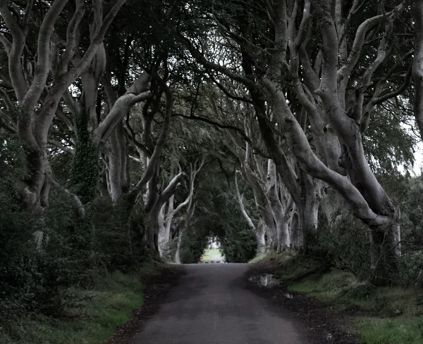

When Mr. Bilbo Baggins of Bag End announced that hewould shortly be celebrating his eleventy-first birthday witha party of special magnificence, there was much talk andexcitement in Hobbiton.Bilbo was very rich and very peculiar, and had been thewonder of the Shire for sixty years, ever since his remarkabledisappearance and unexpected return. The riches he hadbrought back from his travels had now become a local legend,and it was popularly believed, whatever the old folk mightsay, that the Hill at Bag End was full of tunnels stuffed withtreasure. And if that was not enough for fame, there was alsohis prolonged vigour to marvel at. Time wore on, but itseemed to have little effect on Mr. Baggins. At ninety he wasmuch the same as at fifty. At ninety-nine they began to callhimwell-preserved; butunchangedwould have been nearer themark. There were some that shook their heads and thoughtthis was too much of a good thing; it seemed unfair thatanyone should possess (apparently) perpetual youth as wellas (reputedly) inexhaustible wealth.‘It will have to be paid for,’ they said. ‘It isn’t natural, andtrouble will come of it!’
But so far trouble had not come; and as Mr. Baggins wasgenerous with his money, most people were willing to for-give him his oddities and his good fortune. He remainedon visiting terms with his relatives (except, of course, theSackville-Bagginses), and he had many devoted admirersamong the hobbits of poor and unimportant families. But hehad no close friends, until some of his younger cousins beganto grow up.
The eldest of these, and Bilbo’s favourite, was young FrodoBaggins. When Bilbo was ninety-nine he adopted Frodo ashis heir, and brought him to live at Bag End; and the hopes ofthe Sackville-Bagginses were finally dashed. Bilbo and Frodohappened to have the same birthday, September22nd. ‘Youhad better come and live here, Frodo my lad,’ said Bilboone day; ‘and then we can celebrate our birthday-partiescomfortably together.’ At that time Frodo was still in histweens, as the hobbits called the irresponsible twentiesbetween childhood and coming of age at thirty-three
Twelve more years passed. Each year the Bagginses hadgiven very lively combined birthday-parties at Bag End; butnow it was understood that something quite exceptionalwas being planned for that autumn. Bilbo was going to beeleventy-one,111, a rather curious number, and a very re-spectable age for a hobbit (the Old Took himself had onlyreached130); and Frodo was going to bethirty-three,33,animportant number: the date of his ‘coming of age’.